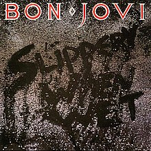
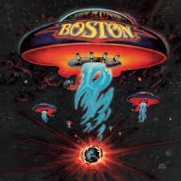
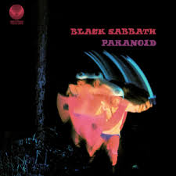

Slippery When Wet
Bon Jovi
1986
- Let it Rock
- You Give Love a Bad Name
- Livin' on a Prayer
- Social Disease
- Wanted Dead or Alive
- Raise Your Hands
- Without Love
- I'd die For You
- Never Say Goodbye
- Wild in the Streets

Led Zeppelin
Led Leppelin II
1969
- Whole Lotta Love
- What is and What Should Never Be
- The Lemon Song
- Thank You
- Heartbreaker
- Living Loving Main(She's just a Woman)
- Ramble On
- Moby Dick
- Bring it on Home

Electric Ladyland
Jimi Hendrix
1969
- ...And the Gods Made Love
- Have You Ever Been (To Electric LadylAnd)
- Crosstown Traffic
- Voodoo Chile
- Little Miss Stranger
- Long Hot Summer
- Come on(Let the Good Times Roll)
- Gypses Eyes
- Burning of the Midnight Lamp
- Rainy day, Dream away
- 1983...(A Merman I Should Turn to Be)
- Moon Turn the Tides...Gently Gently Away
- Still Raining, Still Dreaming
- House Burning Down
- All Along the Watchtower
- Voodoo Child (Slight Return)
Thriller
Michael Jackson
1982
- Wanna Be Startin' Somethin'
- Baby Be Mine
- The Girl Is Mine(with Paul McCartney)
- Thriller
- Beat It
- Billie Jean
- Human Nature
- P.Y.T(Pretty Young Thing)
- The Lady in My Life

Boston
Boston
1970
- More Than a Feeling
- Peace of Mind
- Foreplay/Long Time
- Rock & Roll Band
- Smokin'
- Hitch a Ride
- Something About You
- Let Me Take You Home Tonight

Abbey Road
The Beatles
1969
- Come Together
- Something
- Maxwell's Silver Hammer
- Oh! Darling
- Octopus's Garden
- I Want You(She's so Heavy)
- Here's Comes the Sun
- Because
- You Never Give Me Your Money
- Sun King
- Mean Mr Mustard
- Polythene Pam
- She Came Through the Bathroom
- Golden Slumbers
- Carry that Weight
- The End
- Her Majesty

Paranoid
Black Sabbath
1970
- War Pigs
- Paranoid
- Planet Caravan
- Iron Man
- Elecetric Funeral
- Hand Of Doom
- Rat Salad
- Fairies Wear Boots

Nevermind
Nirvana
1991
- Smells Like Teen Spirit
- In Bloom
- Come As You Are
- Breed
- Lithium
- Polly
- Territioral Pissing
- Drain You
- Lounge Act
- Stay Away
- On A Plain
- Something In The Way
- Endless Nameless

Van Halen
Van Halen
1979
- Runnin' with the Devil
- Eruption
- You Really Got Me
- Ain't Talkin''bout' Love
- I'm the One
- Jamie's Crying
- Atomic Punk
- Feel Your Love
- Little Dreamer
- Ice Cream Man
- On Fire

Rumours
Fleetwood Mac
1977
- Second Hand News
- Dreams
- Never Going Back Again
- Don't Stop
- Go Your Own Way
- Songbird
- The Chain
- You Make Loving Fun
- I Don't Want to Know
- Oh Daddy
- Gold Dust Wowan
Girls, Girls, Girls
Mötley Crüe
1987
- Wild Side
- Girls, Girls, Girls
- Dancing on Glass
- Bad Boy Boogie
- Nona
- Five Years Dead
- All in the Name of Rock 'n' Roll
- Sumthin' For Nuthin'
- You're All I Need
- Rodeo
Metallica
Metallica
1991
- Enter Sandman
- Sad But True
- Holier Than Thou
- The Unforgiven
- Wherever I May Roam
- Don't Trean On Me
- Through the Never
- Nothing Else Matters
- OfWolf and Man
- The God that Failed
- My Friend of Misery
- The Struggle Within